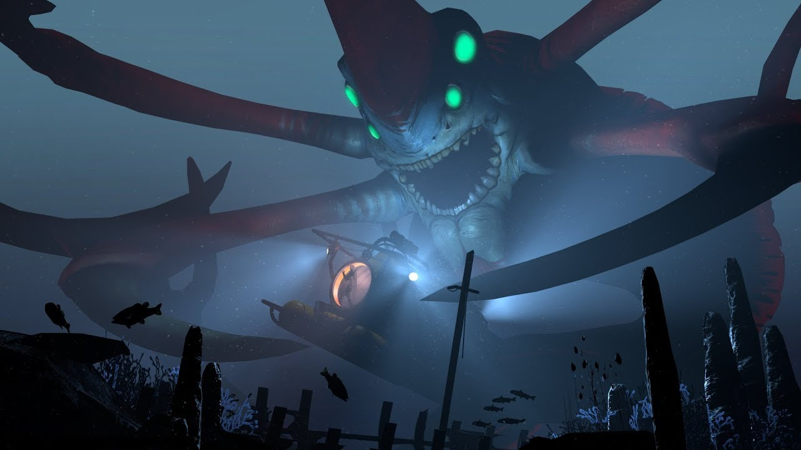
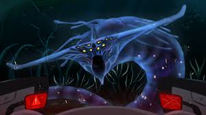
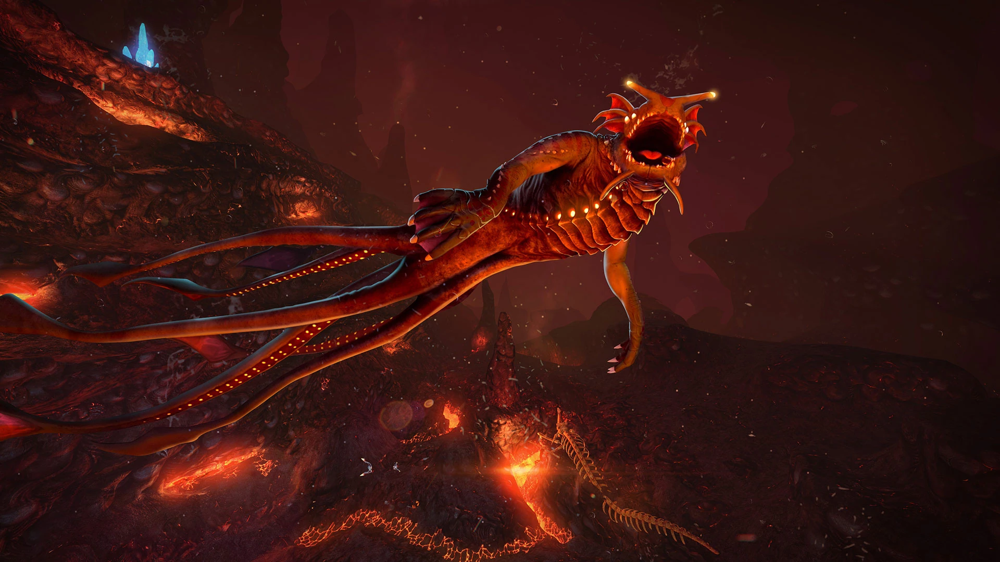
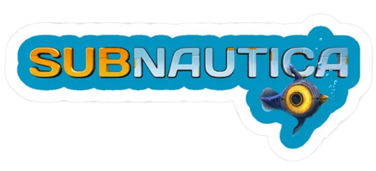
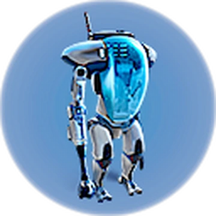

Reaper Leviatan
Se encuentra mayormente en las Dunas

Ghost Leviantan
Se encuentra mayormente en el Void

Sea Dragon Leviatan
Se encuentra en la zona de Lava


Se encuentra mayormente en las Dunas

Se encuentra mayormente en el Void

Se encuentra en la zona de Lava

Es el prawn el mejor vehiculo del juego? considerando a sus oponentes el Seamoth y el ciclops que creo que todos son muy buenos para sus respectivas funciones aunque el prawn es el killer de leviatanes